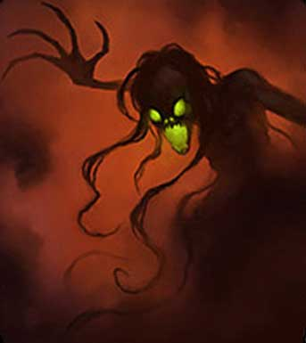

|
 |
Ambiente/Habitat | Qualsiasi, solitamente rovine od edifici abbandonati |
| Frequenza | Rara | |
| Organizzazione | Solitaria o Piccolo Gruppo | |
| Periodo di Attività | Qualsiasi | |
| Dieta | Nessuna | |
| Intelligenza | Semi-intelligent (3) | |
| Punti Combattimento | Nessuno | |
| Tesoro | Nessuno | |
| Allineamento Dominante | Neutrale Malvagio | |
| Numero di Apparizione | 1d6 | |
| Classe Armatura | 4 [10 base, 4 corazza, 2 destrezza] | |
| Movimento | 8 esagoni | |
| Dadi Vita | 4 (+4 punti ferita) | |
| Thac0 | 16 | |
| Numero di Attacchi | Tocco | |
| Danni | 2d4+2 (Energia Negativa) | |
| Poteri Offensivi | Istinto Predatorio; Esalazione Venefica; |
|
| Poteri Difensivi | Robustezza
Superiore (+4 punti ferita); Abilità Speciali dei Non Morti; Immunità alle armi normali / 5 danni a colpo; |
|
| Poteri Generici | Forma Incorporea; | |
| Vulnerabilità | Vulnerabilità alla Luce
Solare; Vulnerabilità dei Non Morti; |
|
| Resistenza alla Magia | Nessuna | |
| Sensi | Sensi dei Non Morti | |
| Dimensioni | Medium (1,8 m. altezza) | |
| Morale | Fearless (20) | |
| Valore in Punti Esperienza | 477 |
|
TIRI SALVEZZA DELLA CREATURA |
|||||||
| CORAGGIO | ENERGIA VITALE | MAGIA | MALATTIA | MENTE | RIFLESSI | ROBUSTEZZA | VELENO |
| 0 | 0 | 0 | 0 | 0 | 0 | 0 | 0 |
| 49 | 55 | 62 | 47 | 60 | 54 | 53 | 49 |
Descrizione
Queste creature appaiono come ombre scure fluttuanti. L'interno del loro corpo appare dalle fessure del viso costituito da un gas verde chiaro leggermente fosforescente. Lunghe ma sparute linee d'ombra si diramano dalla loro testa fluttuando come lunghe ciocche di capelli al vento. Mani lunghe e dalle dita sottili si diramano dalle loro sottili braccia.
Combat
Le Damned Shadow attaccano principalmente con il loro tocco di energia negativa. Se il tocco colpisce una creatura la cui essenza si basa sull'energia positiva questa subirà 2d4+2 danni (si considerano danni da energia negativa) per la perdita di energia risucchiata dalla creatura non morta.
ISTINTO PREDATORIO
(Moderate Special
Ability):
La creatura possiede un forte
istinto predatorio, per tale motivo costei riceve un
bonus costante di +1 alla Thac0
con i suoi attacchi.
ESALAZIONE VENEFICA
(Moderate Special
Ability):
Quando questa creatura riesce a colpire un avversario prosciugandone l'energia
positiva trasforma la stessa in essenza venefica con la quale può aggredire i
propri avversari. In particolare,
nel round immediatamente successivo a
quello nel quale questa creatura ha colpito
una qualsiasi creatura la cui essenza si basi sull'energia positiva la stessa
potrà circondare il proprio corpo di una nube venefica dal colore verdastro. La
nube seguirà la creatura occupando tutte le posizioni (esagoni) adiacenti alla
stessa (melee). Alla fine del round di combattimento in cui è apparsa la nube,
tutte le creature presenti nella stessa subiranno gli effetti del seguente
veleno:
Respiro delle Ombre Dannate: Onset
1 round,
Effetti
0/5,
Delay
none,
Tiro Salvezza
- 1,
Assuefazione
none,
Note
al tiro salvezza non si applica il
modificatore dovuto alla differenza di livelli tra ombra dannata e vittima.
Alla fine del round in cui è apparsa la nube venefica (dopo aver posto in essere
i suoi effetti) la nube velenosa svanirà.
IMMUNITA' ALLE ARMI NORMALI / 5 DANNI A COLPO (Typical Ability): Il corpo della creatura possiede una particolare resistenza ai danni comuni. La creatura, infatti, riduce i primi 5 danni subiti da ogni singolo colpo inferto. I danni provocati dalla magia o dalle armi magiche che siano almeno +1 nonché dagli attacchi fisici ad esse equivalenti non sono in alcun modo ridotti.
VULNERABILITA' ALLA LUCE SOLARE (Moderate Special Vulnerability): Queste creature sono estremamente sensibili alla luce solare ad a forme di luci ad essa equivalenti. Per tale motivo faranno di tutto per restare al di fuori da qualsiasi posizione (esagono) risulti illuminata direttamente (non conta la zona di penombra) dalla luce solare o da una fonte di luce in grado di illuminare in un raggio di almeno 12 metri. Qualora queste creature siano costrette a restare in tale posizione, a partire dal round successivo in cui vi sono entrate (o si sono ritrovate) e fino a quando resteranno in quelle posizioni saranno considerate a tutti gli effetti incapacitate.
FORMA INCORPOREA (Powerful Special Ability): Una creatura incorporea non ha alcuna consistenza fisica. Per tale motivo questa creatura è totalmente immune ad ogni forma di colpo critico. Essendo totalmente incorporea, la creatura può passare anche attraverso posizioni occupate da altre creature, anche se nemiche. La creatura inoltre non subisce restrizioni dovute alla tipologia del terreno né impedimenti presenti sullo stesso. Quando la creatura si sposta, inoltre, la stessa non subisce alcun attacco di opportunità da parte dei nemici che si trovano in corpo a corpo con la stessa. Si noti che, in ogni caso, la creatura non può terminare volontariamente il proprio movimento in una posizione occupata da un'altra creatura; se, per qualsiasi motivo, ciò avviene la creatura sarà automaticamente spostata in una casella libera adiacente selezionata casualmente. Parimenti, le creature fisiche possono attraversare le posizioni occupate dalle creature incorporee senza fermarsi sulle stesse e subendo i previsti attacchi di opportunità. Nonostante una creatura incorporea non possa attraversare oggetti solidi la creatura può passare attraverso qualsiasi tipo di piccola fessura come ad esempio dal buco di una serratura, dalla spazio presente sotto una porta od attraverso una crepa presente su una parete. Affinché la creatura possa effettuare azioni complesse (ad esempio attaccare) è, però, necessario che si trovi in uno spazio in grado di contenere adeguatamente il suo corpo nella forma estesa. Le creature incorporee, inoltre, agiscono in acqua con la stessa facilità con la quale agiscono nell'aria o nel vuoto. Le creature incorporee non possono cadere né subire danni da caduta. Le creature incorporee sono prive di peso (non faranno, ad esempio, scattare trappole che si attivano al passaggio di una creatura di un certo peso). Le creature incorporee, se non dotate di altro potere, non possono compiere azioni volte a sbilanciare, buttare a terra, spingere o spostare un avversario né possono subire questo tipo di azioni. Le creature incorporee si muovono in totale silenzio. Gli attacchi delle creature incorporee non possono essere oggetti di tentativi di deflessione (ad esempio attraverso l'arte di deflettere i colpi) né di blocco (ad esempio attraverso la manovra di combattimento bloccare un attacco). Un non morto incorporeo può essere danneggiato dall'energia divina presente nell'acqua santa ma ha il 50% di resistere ad ogni sua esposizione.
POTERI E VULNERABILITA' DEI NON MORTI : In quanto creature non morte questi esseri ottengono le seguenti caratteristiche dei non morti (link):
Habitat/Society
Le Damned Shadow possono essere trovate in cripte sotterranee ed in generale in luoghi tetri ed oscuri. Si tratta di creature non morte stanziali, appena intelligenti, non in grado di comunicare e non interessate a null'altro che ad assorbire l'energia vitale di chi si avventura nei sotterranei dove costoro dimorano. Queste creature odiano la luce e per questo motivo, solo assai raramente si allontanano dai loro sotterranei (in ogni caso durante le ore notturne).
Ecology
Le Damned Shadow sono creature non morte e come tale non risultano inserite nell'ecologia del normale mondo di Arelia.
Mystical Resource Sourge (Polvere) Quantità: 1, Presenza 20% - Scuola di Magia: Necromancy - Qualità della Risorsa: Uncommon.